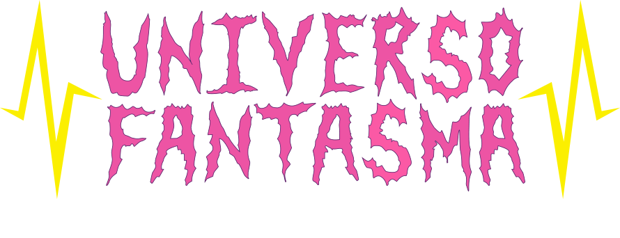
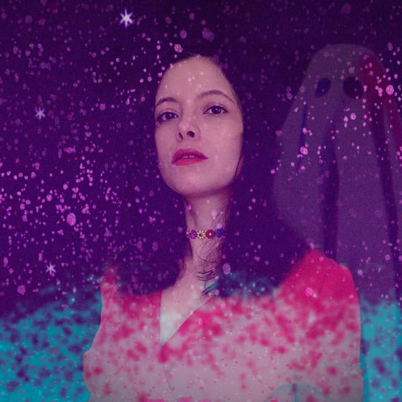

Las redes sociales se convirtieron en una pelea de bar, y entre los improperios y los puñetazos es muy difícil hacer sentido de lo que está pasando. Universo Fantasma es un podcast para los que se buscan en libros, canciones y pantallas. Es el lugar al que los buenos conversadores acuden para surtirse de nuevos temas y anécdotas. A través de entrevistas a activistas, artistas y académicos, la escritora de comedia Andreína Borges examina los temas que causan guerras en Twitter, invitando a la audiencia a reflexionar con ella.